问七五笔
以往版本的问七五笔码表来自2006年左右的极品五笔，经多年使用，发现有微软
Office2000自带的五笔更为精简，并且完整。
经过核对，该码表完整地收录了所有GB2312汉字，包括一级，二级共6763个，另
外还有两个GBK汉字：“珮”，“镕”。
收录的辞条比较少，这应该算是一个优点吧。
问七五笔设计的初衷是用于简体汉字，追求速度、规范以及准确性。
即少而精，重定制。
最好的情况就是，词条中每个词都是你用到的，每一个词条都不重码。
不要收录很少用到的词条，与常用字词重码的罕用汉字尽量
问七五笔非常重视定制，问七五笔的定制与其它五笔输入法不一样，其它五笔输
入法，定制可能只是他的一个附加功能，因为他们功能很齐全了，但问七五笔却
把定制当作一个重要的功能，因为我们的词条只涵盖了常用的简体字。
我提供了定制的工具，没有可执行文件，而是电子表格，有辞条自动编码功能。
如何添加辞条，词条，有时候我也不知道该用哪个字。
这是一个有趣的问题，可能你需要了解一下简化字的历史。然后记住几个常用的异
体字，你能更好地使用汉语。
原则一，添加词条要规范，或者至少你要知道添加的是怎么词汇。
像“榴梿”，“榴莲”，“帐户”，“账户”，“橘子”，“桔子”究竟是怎么回事。
毕竟，有个依据，不会让自己无所适从，减少大脑损耗。
技术上，添加词条要顾及编码和平常输入的思维习惯。下面是一些参考建议。
添加偏正短词，即非基础的词条时，如果遇到重码，一般可以放弃。
一般人打字的时候，大多数还是以基础词条为单位来思考。说不定，你添加
之后，今后也忘记了有这么一条词条。
例如：意大利烧饼，美式肉夹馍，一般情况下，大多会以“意大利”+“烧饼”，
“美式”+“肉夹馍”的方式来输入。以2-4个字为单位的输入，速度已经不错了啦。
基础码表
参考资料
来不急解释了，先下载这个码表。
https://github.com/imgtec/windows-7-wubi/archive/master.zip
下载好之后，把码表放到这个目录下，替换系统原有文件：
C:\Program Files\Windows NT\TableTextService
如果你的系统是64位的，那么还有这里：
C:\Program Files (x86)\Windows NT\TableTextService
完成之后，添加语言和输入法，香港繁体-大易输入法。
切换到大易输入法，就可以快乐地使用五笔了。
网页刚刚完成搬迁，还没有装修，将就将就吧。
- - - - - - - - - - -
| 快捷键功能表 |
| ctrl-space | 中文/英文 输入状态切换 |
| ctrl-period | 中文/英文 符号状态切换 |
| 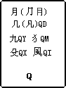 |
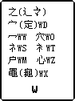 |
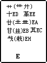 |
 |
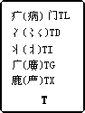 |
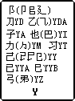 |
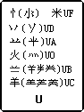 |
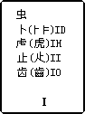 |
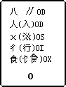 |
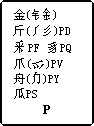 |
|
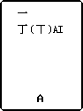 |
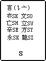 |
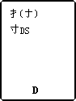 |
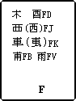 |
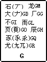 |
 |
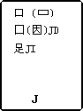 |
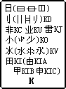 |
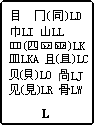 |
|
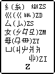 |
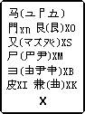 |
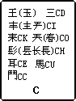 |
 |
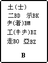 |
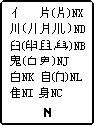 |
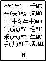 |
|
## 问七五笔 [下载地址](https://github.com/imgtec/windows-7-wubi/archive/master.zip)
```
这一个五笔是在我刚买电脑的时候，由于我不喜欢安装版本输入法，因为安装版的输入
法功能过于强大，而我却没有用到。而且自造词也不方便维护。于是我找了一个码表，
使用Windows XP自带的输入法生成器制作了这个输入法。
码表来自于极品五笔，至于哪个版本，实在已经忘了，大约是2006年左右的时候罢，在
此感谢极品五笔的作者，并附上极品五笔的网址：
http://www.jpwb.net/
http://www.jpwb.cc
这个码表经过十多年的增删，已经和极品五笔极不相同了。很多与常用字重码的生僻汉
字也不能输入了。如果你需要输入很多生僻字，可能问七五笔并不好用。问七五笔只是
一个简单到不能再简单的五笔输入法而已。但兼容性，稳定性，还有自定义词汇，应该
是最好的吧。在 Windows 的平台上，还有什么输入法比系统自带的更稳定？
Windows XP 的版本我已经不再维护了，但是通过一些键盘宏，如VIM等编辑器，可以轻
易地转换为 Windows XP 码表的格式，再使用 Windows XP 自带的输入法生成器，即可
安装。
后来毕业了，Windows7出来了，但是可用的输入法并不多，于是经过一番研究，发现可
以通过替换某个输入法的码表，来达到添加五笔输入法的目的。这里我选择了郑码。之
后一直使用。
到了去年开始使用 Windows 10，也是用了类似的方法，再用上了这个码表。由于这些
代码托管网站也不是那么固定，谷歌，微软，这么大的公司竟然也关闭了，我还是做一
个固定的网址吧：
http://ime.tkernel.org
以上，大约就是这个输入法的故事了。
```
## 如何学习五笔
```
这一段并不是教程，而是一个思路而已，毕竟现在学习五笔的人也不多了吧，而且详细
的教程也是非常容易找，我只想指出一些我看过别人学五笔过程中走过的弯路。
就我观点来看，很多人学习五笔走入了一个误区，那就是背口决！在打字的时候，人应
该想的是“这个字根在哪里”，而不是把25个按键上的所有字根找一遍。这个思维方式很
不科学，但可能适合记忆力超强的人吧，反正我不想这么干。
其实五笔输入法的学习，记忆量并不是很多。依我看来，就是：
字根分布：
1. 25个键名，1个万能键(z)
2. 笔划的编号
1 横 2 竖 3 撇 4 捺 5 折
3. 按键的编号，其实学习五笔的时候，建议把键盘上的字母全磨掉，真的没用。
4. 个别无规率字根，其实这个可以暂时忽略，碰壁的时候再补就可以了。
记住上面几点之后，你大约可以推测出八九成的字根的位置了。
这时候，可以练练键名，其实这个也是练习指法的好途径，如果你还没有学习英文打字
那就更好了。英文打字对五笔输入法的学习一点帮助也没有。
组字原则：
这个到别的地方找找吧。
接下来就是练习练习了吧。
```
## 学习五笔常见误区
1. 背口诀，一旦背了口诀，就进入了另一种学习五笔的路了。
2. 蛮力记忆按键上有什么字根，却不是记忆字根所在位置。
3. 勤于记忆，回避思考。
4. 认为需要英文打字基础，其实不然。
## 五笔学练参考教程
首先，输入法不是高科技，四分学习，六分练习。
0. 忘掉你的键盘上的字母，现在是按手指来认按键。
1. 键名练习，如果你没有学习过英文打字，那太好了。
2. 理论学习，注意与正经的语文的一些差别。
2.1 有了理论基础之后，可以按理论寻找字根
2.2 这个时候，应该有一些部“例外”的字根找不到，没关系，还有一个涂掉口诀字根表。
3 拆字组字，取码的规划。
4. 五笔字型识别码
5. 打打字，扫出一些没接触到的字根
有什么需要背的吗，真没有，练练就行，不必刻意。
嗯，可能我得收个人验证一下这个教程是否写全了，反正我知道疗效可以。
## 学习效果参考
我在高一的时候，凭一个文曲星小电脑，学了一个星期，达到35字/分钟的速度。
学习资料是小霸王学习机的说明书，可惜那个教程已经找不到了。
## 修改码表原则
```
其实，如果你拿去用之后，问七五笔就是你自己的码表了，想怎么改都无所谓吧，但是
我还是建议：
1. 增加传统词汇时，必务确认该词汇符合汉语规范，避免出现错别组成的词汇。
2. 增加网络新词汇，如果新词汇容易与传统词汇发生辨认困难，建议放弃。
3. 常用字、词汇与一个生僻字发生重码时，如果你两三个月都用不到这个生僻字，
删掉吧！有很多方法可以输入那个字。
4. 发现问七五笔有很多GBK的汉字不能输入，这个很正常，如果这些字一年都没输入
几次，那就不管它吧。
```
2017.9.14
[下载问七五笔](https://github.com/imgtec/windows-7-wubi/archive/master.zip)。


|
赞助这个项目
|
|
微信支付
|
![]()
|
.oOo. |
支付宝
|
![]()
|